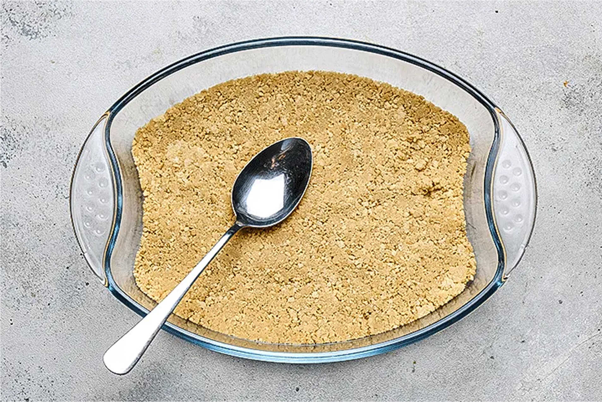
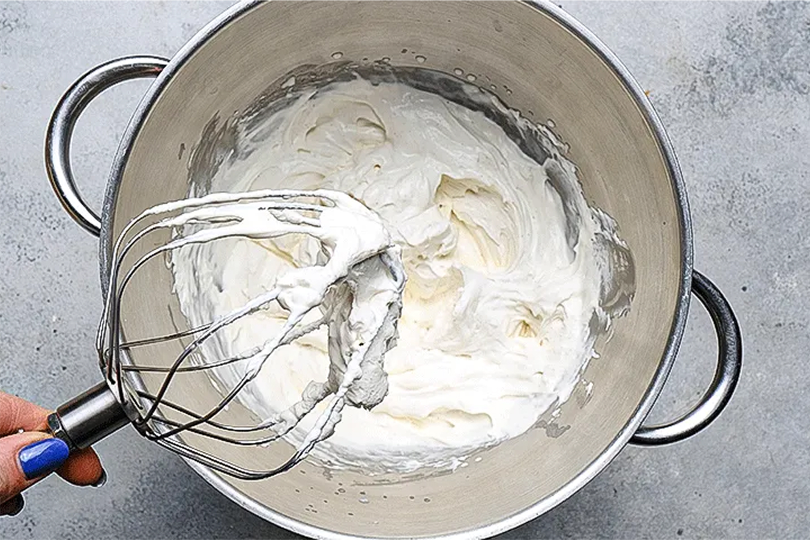
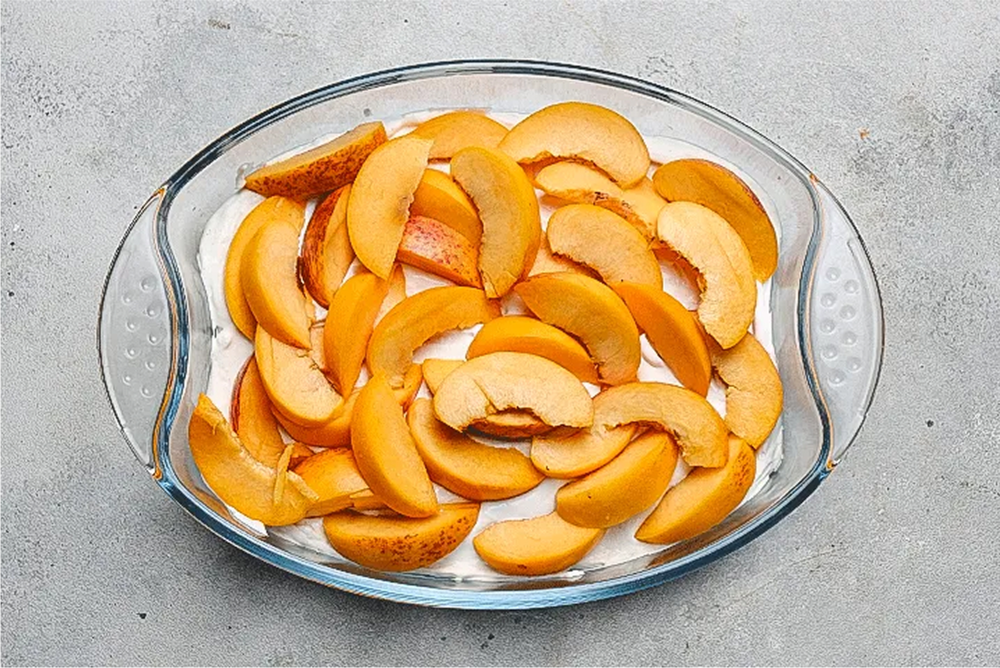
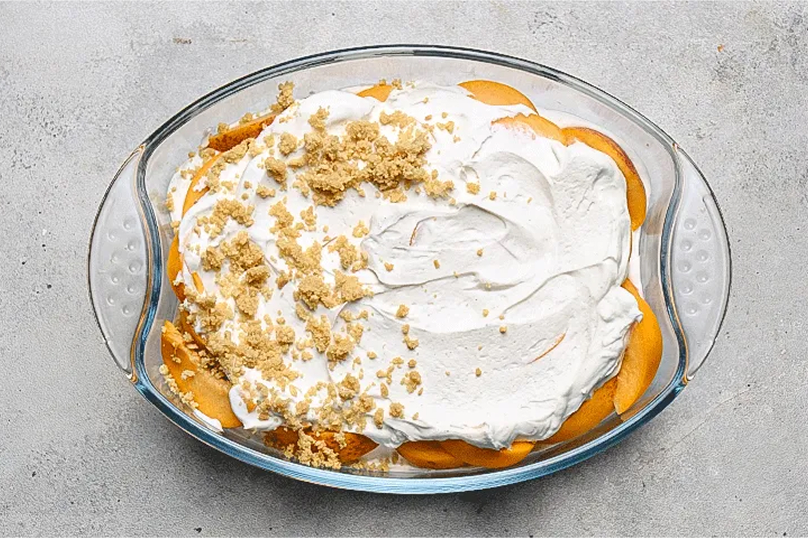

60 минут
60 минут
Ингриденты:
Персик, 3 шт.
Печенье песочное, 140 г.
Сливки 33%, 240 мл.
Творожный сыр, 125 г.
Масло сливочное, 85 г.
Чизкейк с персиками без выпечки — это простой, но вкусный семейный десерт, который обязательно нужно подавать с горячим чаем или свежезаваренным кофе. Классический чизкейк «Нью-Йорк» действительно готовится в несколько этапов, один из которых (довольно важный) — бережное запекание в духовке с соблюдением определенного температурного режима. Ничего сложного, но десерт требует соблюдение технологии и выбора правильного творожного сыра. Наш рецепт чизкейка с печеньем и персиками проще, но ничем не хуже. Внешне он не похож на классический чизкейк, но за сочетание взбитых сливок и спелых персиков можно простить и это. Пробуйте!
Шаг 1
Создаем песочную основу
Растопите сливочное масло. Измельчите печенье с сахаром в блендере в крошку, добавьте масло. Отложите 1/3 получившейся смеси, остальную выложите в форму размером 15 х 20 см, хорошо утрамбуйте, уберите в холодильник.

Шаг 2
Подготавливаем начинку
Взбейте холодные сливки и творожный сыр с ванильным сахаром и сахарной пудрой в воздушный крем.

Шаг 3
Самое сладкое!
Выложите половину крема на песочную основу, сверху разложите персики, нарезанные ломтиками.

Пир!
Немного терпения и ПИР!
На персики положите вторую половину крема и посыпьте оставшейся песочной крошкой. Уберите в холодильник минимум на 2 ч.


139
Поделиться статьей